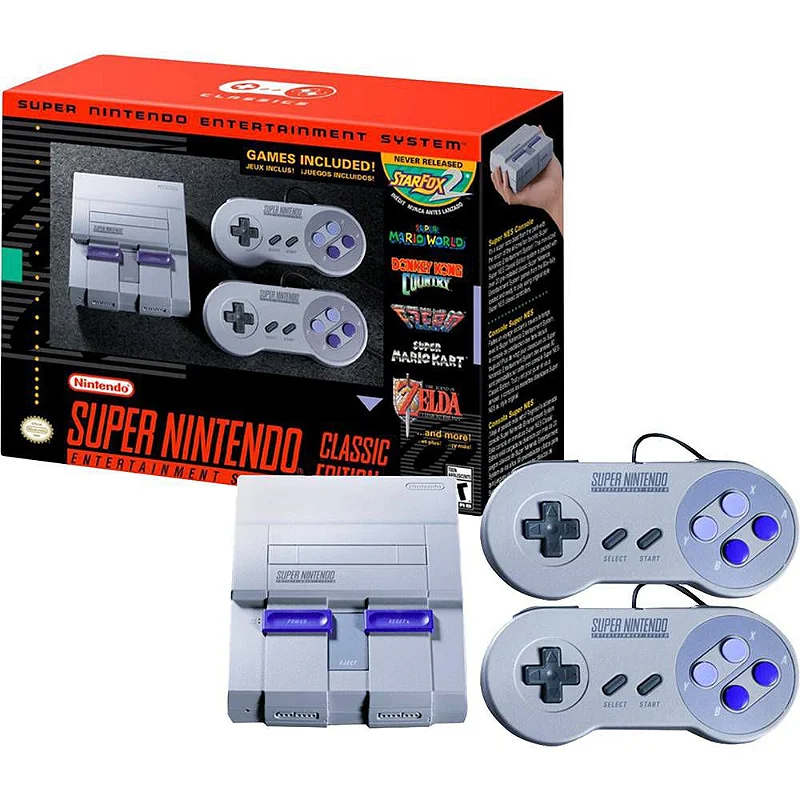
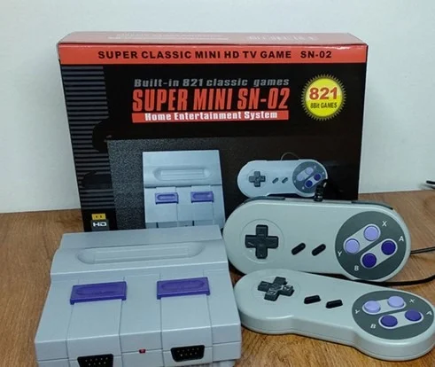

Console Super Nintendo (SNES) - Edição Clássica
Marca: Nintendo
R$ 499,90
ou em até 6x de R$ 83,31 sem juros
- A Lenda dos 16-bits: Reviva a era de ouro dos videogames com o console que definiu uma geração, famoso por seus gráficos coloridos e som estéreo revolucionário.
- Biblioteca de Clássicos: Acesso a uma das maiores e mais aclamadas bibliotecas de jogos de todos os tempos, incluindo Super Mario World, The Legend of Zelda e muito mais.
- Controle Icônico: Jogue com o controle que introduziu os botões de ombro (L/R) e se tornou um padrão de design para todos os consoles futuros.
Em estoque. (Item de colecionador, recondicionado)
Vendido e entregue por Nexus Games
Descrição do produto
Volte no tempo com o Super Nintendo Entertainment System, o console que dominou os anos 90 e gravou seu nome na história. Com sua poderosa CPU de 16-bits e o chip gráfico "Mode 7" que permitia rotação e escala de cenários, o SNES trouxe para casa experiências de arcade e mundos de fantasia nunca antes vistos. Este item de colecionador foi totalmente recondicionado e testado por nossa equipe, garantindo a autêntica experiência retrô com a confiabilidade que você espera. Perfeito para colecionadores e para apresentar a uma nova geração a magia dos clássicos.
Informações técnicas
| Marca | Nintendo |
| Modelo | Super Nintendo Entertainment System (SNES) |
| CPU | 16-bit 65c816 Ricoh 5A22 @ 3.58 MHz |
| Armazenamento | Cartuchos de Jogo (não inclusos) |
| Conteúdo da Embalagem | 1 Console SNES, 2 Controles Originais, 1 Cabo AV, 1 Fonte de Energia |